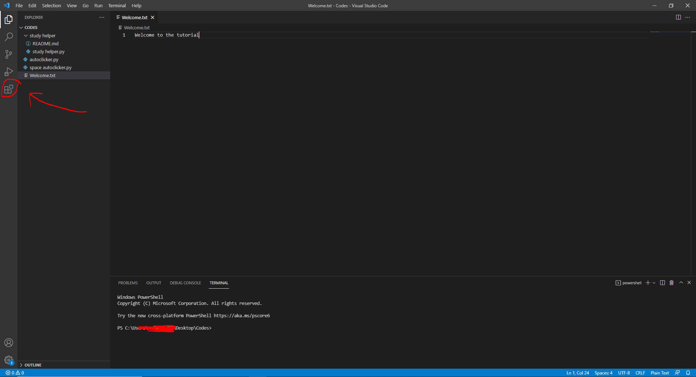
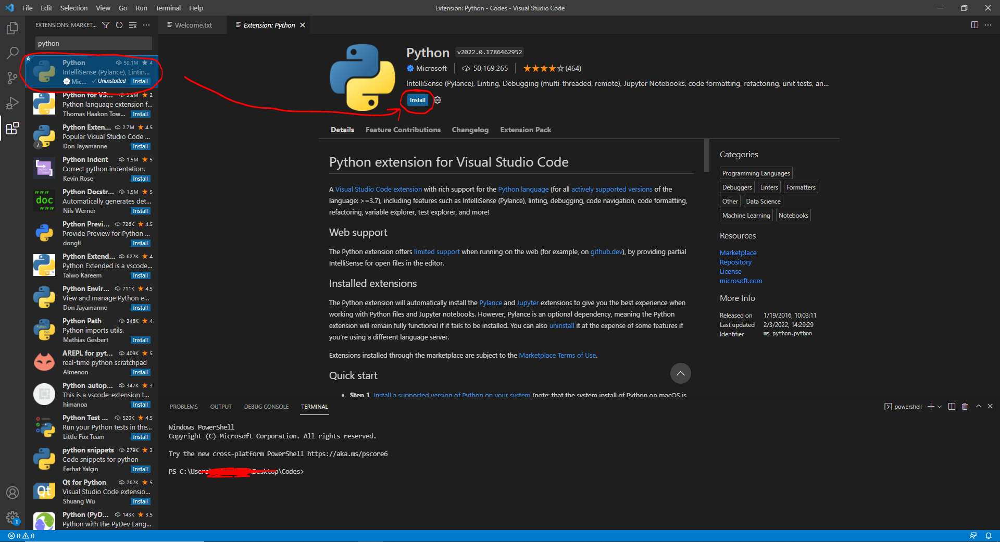

In this tutorial you will learn the important things that youll need to have or know to start coding with Python. It is important that you have the required things and some base knowledge before you can start coding in Python.
Step One
I am going to show you guys how to install an IDE. An IDE is a Integrated Development Environment. It is where you write the code and in most cases, you can run the code inside the IDE as well. Without an IDE, its very hard to code. Itll tell you what your errors are, sometimes while writing code itll even show it. Itll also help make it easier to read and understand the code
Installing and Setting up VScode
In order to install visual studio code, you just have to go to their website.
Click Here Install Visual Studio Code
After installing VScode, open it
Youll need to install Python onto visual studio code, see screenshots below
After finding the Python extension, youll have to install it. This will allow you to make and run .py files, itll also give you a Python terminal. If you want to use VScode for Python than youll need to install the extension
Starting to Code
Now you can click the top button again to open the files. Than you can make a new file, and make sure it ends in .py than itll be a Python file. Than you can open the file and start coding from there.